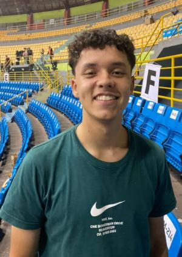

Gustavo Fragas Cunha | WDD 130
My name is Gustavo, I am from Brazil! I'm studying Software Development at BYU and previously completed a technical program in Software Development at Etec Parque Belém... I served a full-time mission for the church of Jesus Christ in Argentina, in the states of Santa Fe and Entre RÃos, I'm so excited to start this course and reach my goal of becoming a full-stack developer